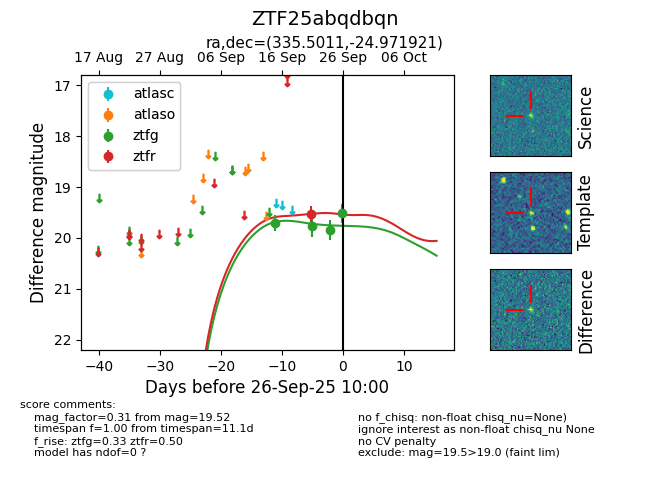
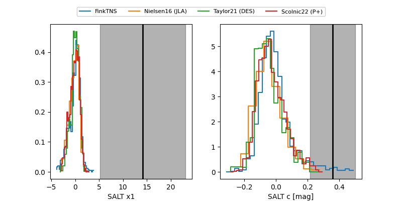

FINK: ZTF25abqdbqn
Lasair: ZTF25abqdbqn
ALeRCE: ZTF25abqdbqn
ZTF25abqdbqn (ztf,fink)
equatorial (ra, dec) = (335.5011,-24.97192)
galactic (l, b) = (28.0305,-56.48946)


last ztfg=19.52, ztfr=19.53
4 ztfg, 1 ztfr detections